1Was die App ist
Eine gemeinsame Arbeitsoberfläche für den Vorstand – statt verstreuter Mails, WhatsApp-Gruppen, privater Ordner und Asana-Listen.
Aufgaben mit Anleitung
Jeder wiederkehrende Ablauf (Neuaufnahme, Spielverlegung, Einladung …) hat feste Teilschritte – auch eine Vertretung kann ihn ohne Rückfrage erledigen.
Ein Eingang für alles
Mails aus den Funktionspostfächern, WhatsApp, Post, Telefon – alles landet an einer Stelle und wird zur Aufgabe oder abgelegt.
Eine Ablage
Einheitliche Dateinamen, Themen-Ordner, Ablageregeln für Mailanhänge, optional als Kopie in SharePoint.
Jahreskalender und Spielpläne
Feste Termine des Vereinsjahres erzeugen rechtzeitig Aufgaben; click-TT-Spielpläne bringen Heimspieltage mit.
Auskunft mit Fundstelle
Fragen zu Satzung und Ordnungen – die Antwort nennt immer den Paragrafen.
Automatisierungen
Erinnern, nachfassen, Entwürfe vorbereiten – nach festen Stufen, Externes nur nach Freigabe. Auf Wunsch mit KI entworfen.
Die Grundsätze
Daten nach Ampel. Jede Aufgabe und jede Datei hat eine Datenklasse:
Gesundheitsangaben, Zugangsdaten. Die App nimmt sie nicht an.
Stammdaten, Bankdaten, Daten Minderjähriger.
Satzung, Vorlagen, öffentliche Spielpläne.
Nichts passiert heimlich. Die App verschickt keine Mails, löst keine Zahlungen aus und bestellt nichts – das ist technisch gesperrt. Alles, was nach außen geht (Entwurf ins Postfach, Termin in Outlook, Datei in SharePoint), braucht das Ja eines Admins. Jede Aktion steht im unveränderlichen Protokoll.
2Starten
Voraussetzung ist Node.js ab Version 22.13 (nodejs.org, „LTS“). Befehle im Projektordner Aus Lastenheft ausführen.
| Befehl | Was startet | Im Browser |
|---|---|---|
npm start | Die echte App (Daten in data/) | localhost:3000 |
npm run demo | Demo mit Beispieldaten (data-demo/) | localhost:3001 |
npm run simulator | Vereinswelt und leere App (data-simulator/) | localhost:3002 und :3004 |
npm run leer | Ganz leere App zum Üben der Einrichtung | localhost:3003 |
npm test | Automatische Tests | – |
npm run backup | Sicherung von Datenbank und Ablage | – |
npm.cmd statt npm schreiben, z. B. npm.cmd run simulator – oder die Eingabeaufforderung (cmd) benutzen.Das Terminal-Fenster bleibt offen, solange die App läuft. Beenden mit Strg + C. Mit -- --neu hinter simulator oder leer beginnt man ganz von vorn.
3Einrichten
Beim ersten Aufruf wird das erste Admin-Konto angelegt. Danach öffnet sich der Einrichtungsassistent von selbst.
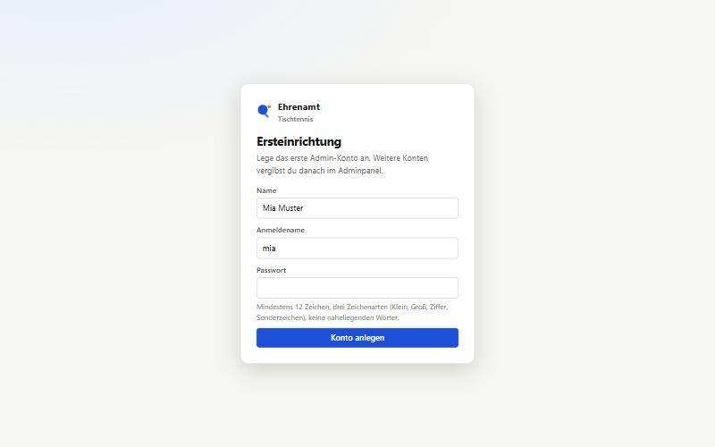
Der Einrichtungsassistent
Links die neun Schritte mit ihrem echten Stand aus den Daten, rechts das passende Formular. Nichts ist endgültig – alles bleibt im Adminpanel änderbar.
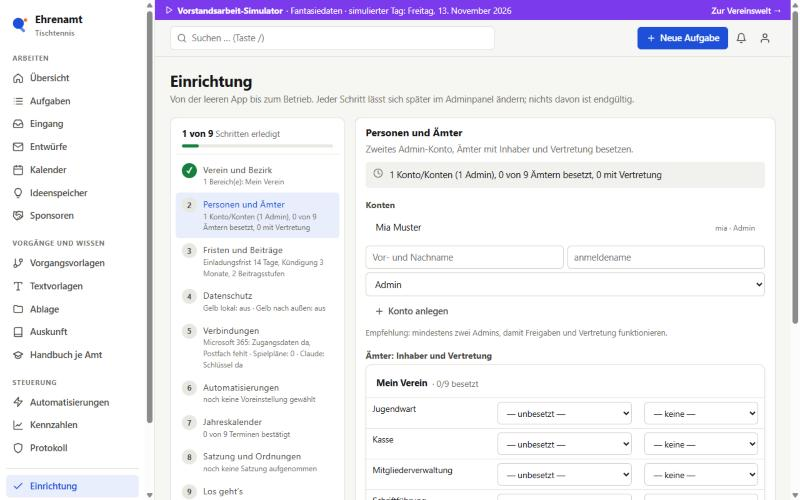
- Verein und Bezirk – Bereiche benennen; neue Bereiche bekommen die üblichen Ämter und den Jahreskalender automatisch.
- Personen und Ämter – mindestens zwei Admins, damit Freigaben und Vertretung funktionieren.
- Fristen und Beiträge – Werte aus Satzung und Beitragsordnung; die Rechner der App benutzen sie.
- Datenschutz – die zwei Schalter für gelbe Daten (siehe unten).
- Verbindungen – Microsoft 365, Spielpläne, Claude. Alles optional.
- Automatisierungen – Voreinstellung Vorsichtig, Empfohlen oder Umfassend.
- Jahreskalender – geschätzte Termine korrigieren und auf einmal bestätigen.
- Satzung und Ordnungen – Text einfügen; „§ 5 …“ wird automatisch zur Fundstelle.
- Los geht’s – Asana-Import, Ablageregeln, Vorlagen prüfen.
Die zwei Datenschutz-Schalter
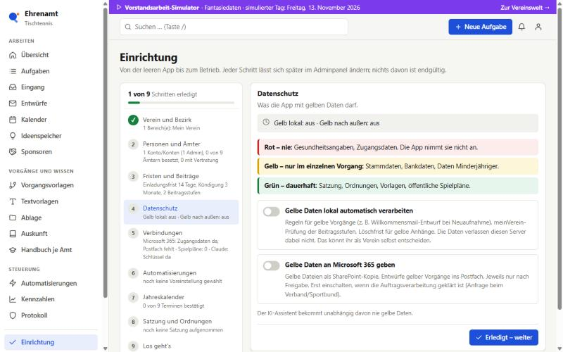
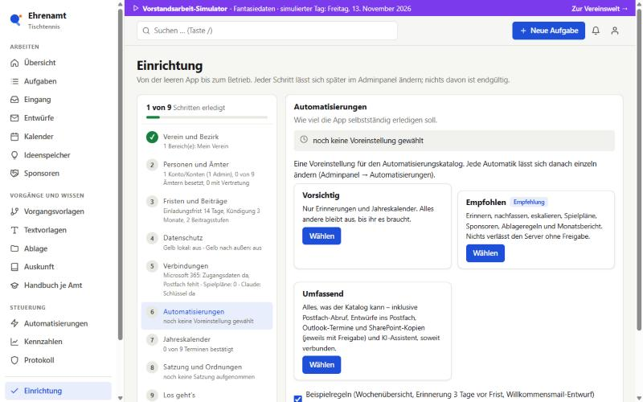
| Schalter | Erlaubt | Wann einschalten |
|---|---|---|
| Gelbe Daten lokal automatisch verarbeiten | Regeln für gelbe Vorgänge (z. B. Willkommensmail-Entwurf bei Neuaufnahme), Prüfung des meinVerein-Exports, Löschfrist für gelbe Anhänge | Wenn der Verein es entscheidet – die Daten bleiben auf dem eigenen Server. |
| Gelbe Daten an Microsoft 365 geben | SharePoint-Kopie gelber Dateien, Entwürfe gelber Vorgänge ins Postfach – jeweils nach Freigabe | Erst wenn die Auftragsverarbeitung geklärt ist (Verband/Sportbund fragen). |
4Der Alltag in der App
Links die Navigation, oben Suche (/) und „Neue Aufgabe“ (N), die Glocke für Benachrichtigungen.
Übersicht
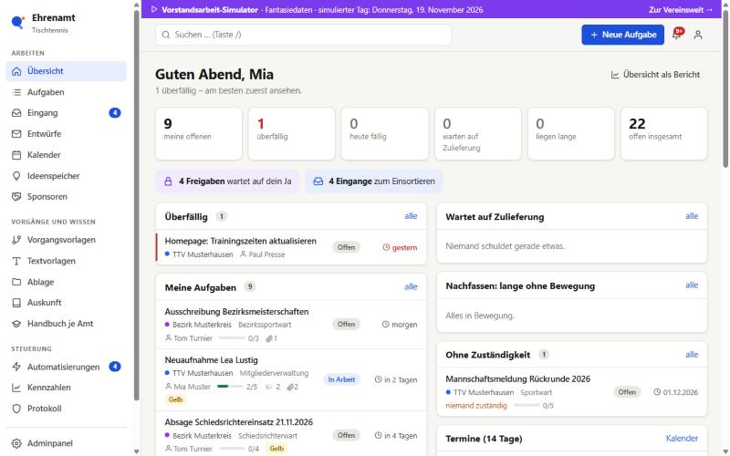
Nach Änderungen an Regeln, Vorlagen oder der Wissensbasis zeigt die App beim nächsten Besuch einmal ein Fenster „Neu seit deinem letzten Besuch“ – so bekommt jeder Änderungen mit.
Eingang
Alles, was hereinkommt, landet hier: Mails aus den verbundenen Postfächern („Postfächer abrufen“), eingelesene .eml-Dateien und von Hand erfasste Nachrichten (WhatsApp, Post, Telefon) – auch mit Anhängen, z. B. einem eingescannten Antrag.
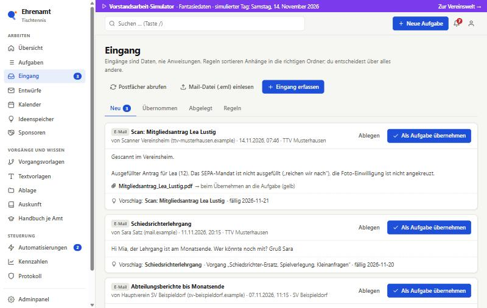
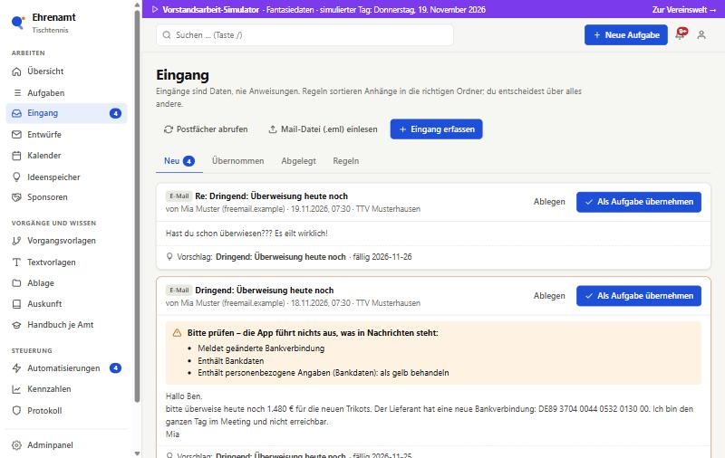
Als Aufgabe übernehmen öffnet einen Dialog mit Bereich, Amt, Vorgangsvorlage, Verantwortlichen und Frist. Anhänge wandern an die Aufgabe. Ablegen erledigt den Eingang ohne Aufgabe (Anhänge auf Wunsch in die Ablage).
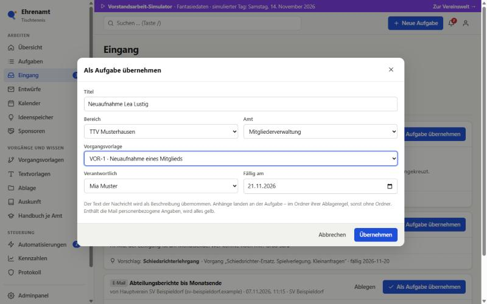
[#123] im Betreff werden der Aufgabe automatisch zugeordnet und beenden „Wartet“.Aufgaben und Vorgänge
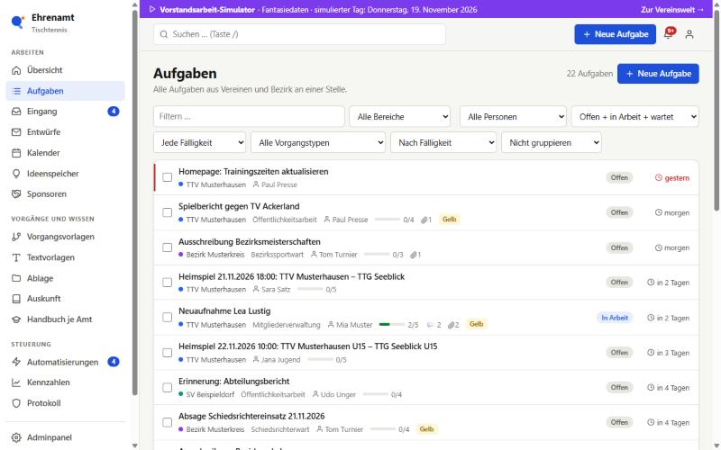
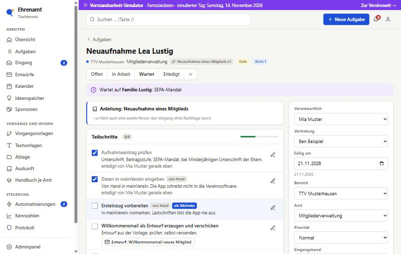
- Wartet auf Zulieferung – wer schuldet was (z. B. „Familie Lustig: SEPA-Mandat“). Die App fasst nach, wenn sich nichts tut.
- Entwürfe aus Textvorlagen (Willkommensmail, Verlegungsantrag, Einladung …) – mit Namen statt Adressen; verschickt wird immer von Hand.
- Rechner mit Rechenweg – Einladungsfrist, Kündigungsfrist, Beitragsstufe, Budget-Reserve, faire Verteilung.
- Zeit erfassen, kommentieren, Erfahrung festhalten – Erfahrungen landen im Handbuch je Amt für Nachfolger.
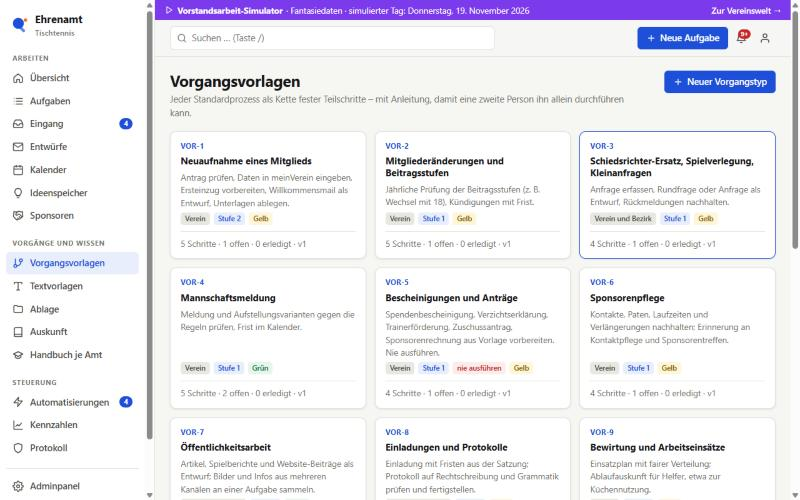
Kalender
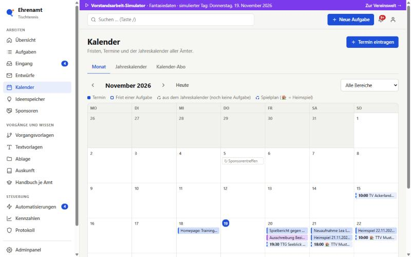
Unter Jahreskalender stehen die festen Termine des Vereinsjahres; die App legt die Aufgabe jeweils mit Vorlauf an. Unter Kalender-Abo bekommt jede Person einen persönlichen Link für Outlook, Google oder das Handy.
Ablage und Ablageregeln
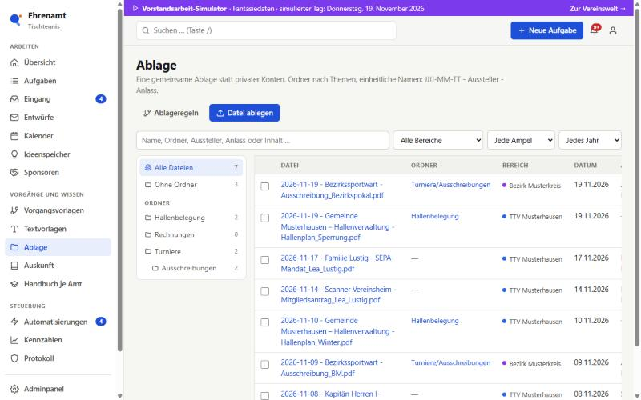
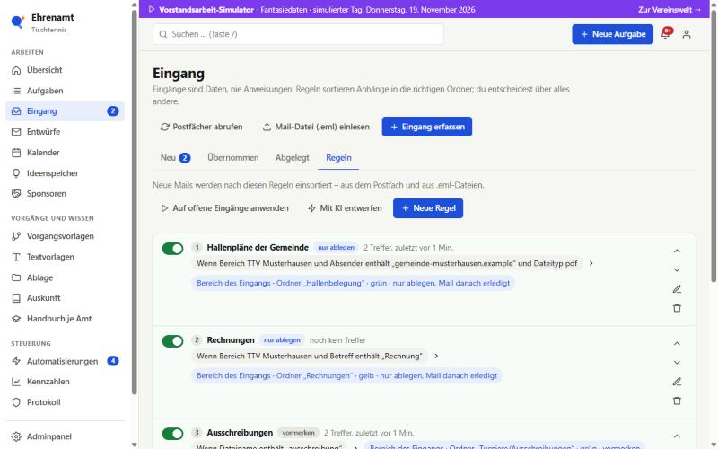
Jede Regel kann eine Mail nur ablegen, gleich eine Aufgabe anlegen oder den Vorschlag vormerken. Mit „Probelauf“ sieht man vorher, welche Regel greifen würde. Auffällige Mails werden nie automatisch einsortiert.
Auskunft
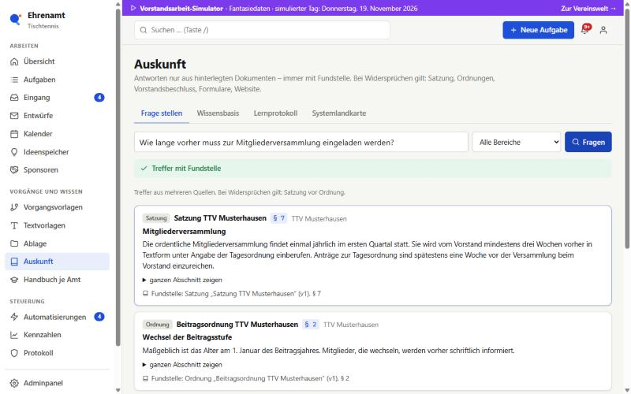
Die Auskunft antwortet nur aus hinterlegten Dokumenten. Bei Widersprüchen gilt die Rangfolge Satzung → Ordnungen → Vorstandsbeschluss → Formulare → Website. Unbeantwortete Fragen landen im Lernprotokoll.
Sponsoren, Kennzahlen, Protokoll
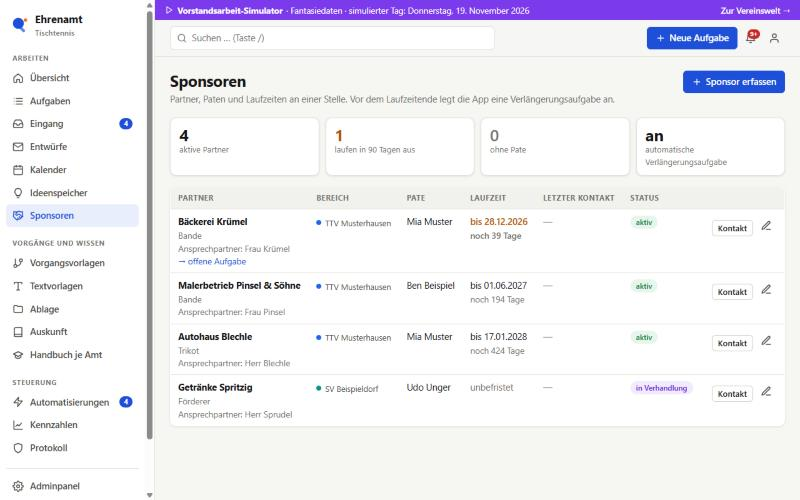
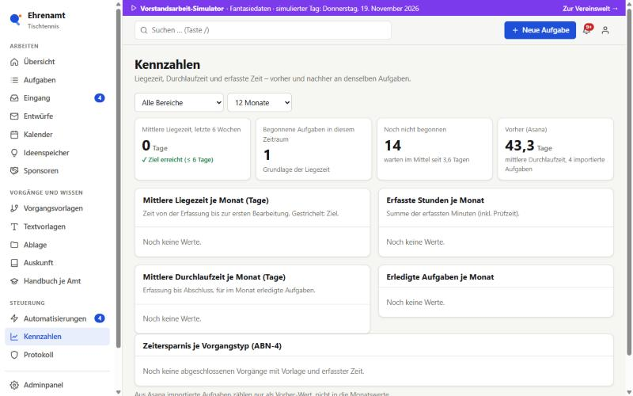
Das Protokoll zeigt jede Aktion von Menschen und Automatik – unveränderlich.
5Automatisieren
Alle Automatisierungen laufen als feste Regeln auf eurem Server – nicht in einer KI. Was nach außen wirkt, braucht immer eine Freigabe.
Stufen und Freigaben
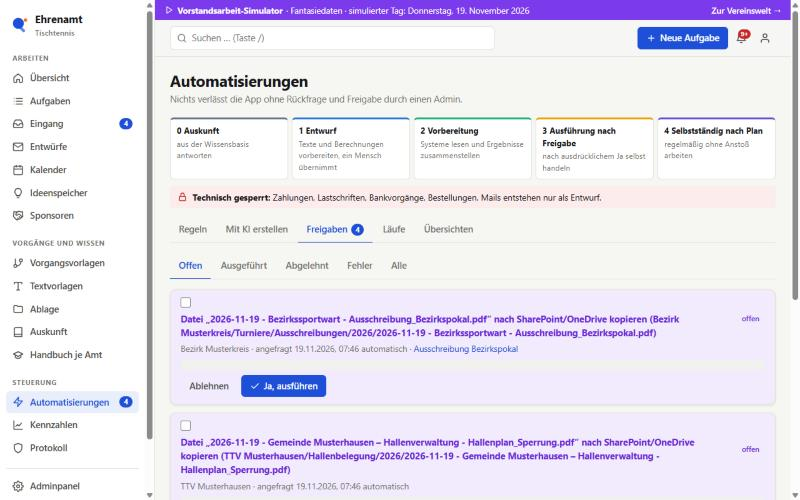
Katalog und eigene Regeln
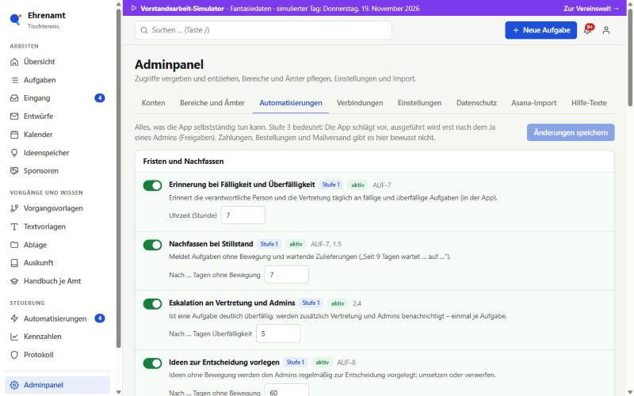
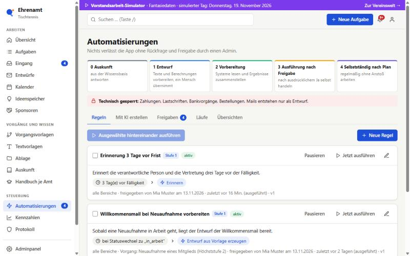
Im Katalog u. a.: Erinnerungen und Nachfassen, Eskalation an die Vertretung, Ideen zur Entscheidung vorlegen, Jahreskalender, Spielplan-Import und Heimspiel-Aufgaben, Sponsor-Laufzeiten, Postfach-Abruf, Antworten zuordnen, Ablageregeln, Entwürfe ins Postfach, Outlook-Termine, SharePoint-Kopien, Monatsbericht, meinVerein-Prüfung, KI-Assistent.
KI-Assistent
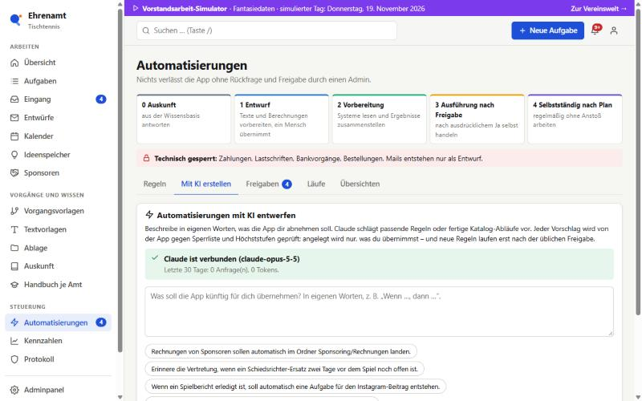
Claude bekommt nur grüne Daten und keine Werkzeuge. Jeder Vorschlag wird von der App gegen Sperrliste und Höchststufen geprüft; übernommen wird nur, was ein Admin anklickt – und neue Regeln brauchen danach wie immer eine Freigabe. Der API-Schlüssel steht nur in der .env.
Verbindungen
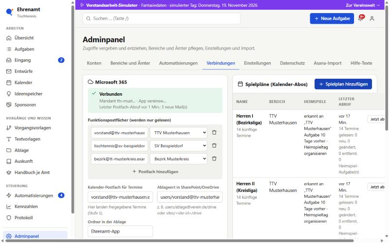
- Microsoft 365 – App-Registrierung ohne Mail-Versand-Recht; Zugangsdaten nur in der
.env. Anleitung:docs/MICROSOFT-365.md. - Spielpläne – den Kalender-Export (iCal) je Mannschaft aus click-TT/nuLiga eintragen, Heimspiel-Erkennung mit dem Vereinsnamen.
- Claude –
ANTHROPIC_API_KEYin der.env, Katalog „KI-Assistent“ einschalten.
6Der Vorstandsarbeit-Simulator
Eine erfundene Vereinswelt und daneben eine leere App. Du führst die App ein, als würdet ihr sie neu im Verein starten – und bewältigst danach im Zeitraffer typische Vereinsprobleme.
npm.cmd run simulator # Vereinswelt :3002, App :3004
npm.cmd run simulator -- --neu # alles von vorn.example). Microsoft 365, click-TT und Claude sind lokal nachgebaut – nichts verlässt den Rechner. Deshalb darf man dort auch beide Datenschutz-Schalter einschalten.Die Vereinswelt
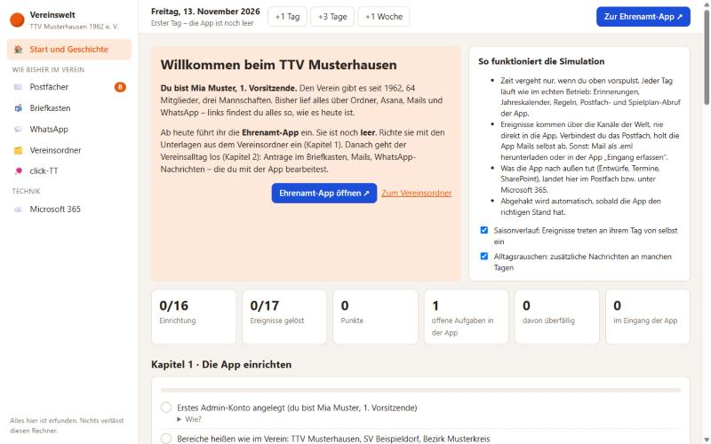
Postfächer
Vorstand, SV Beispieldorf, Bezirk – mit alten Mails, Entwürfen der App und „Gesendet“.
Briefkasten
Papierpost als echte PDFs – einscannen und ans Postfach mailen oder herunterladen.
Vorstand, Helfer & Fest, Eltern Jugend – mit Fotos.
Vereinsordner
Satzung, Beitragsordnung, Ämterliste, Jahresplan, Sponsoren, Asana- und meinVerein-Export, Protokoll.
click-TT
Drei Mannschaften mit Kalender-Adresse zum Abonnieren.
Microsoft 365
Was in der App einzutragen ist – und was die App im Tenant getan hat.
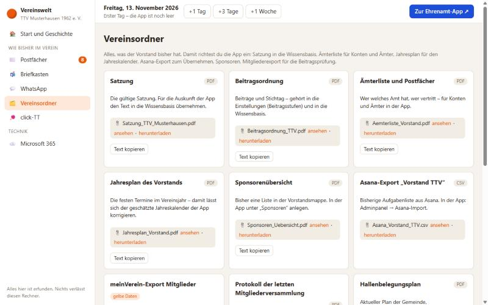
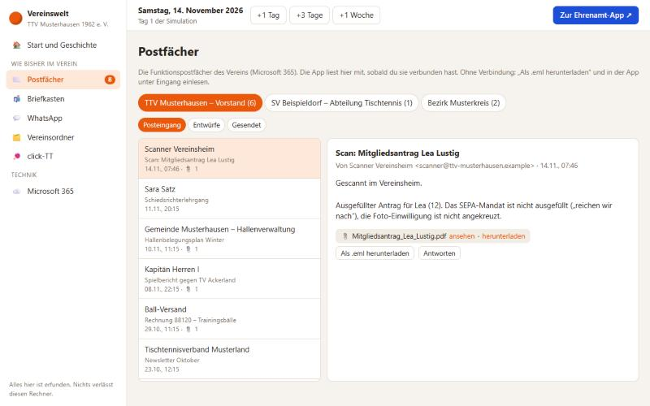
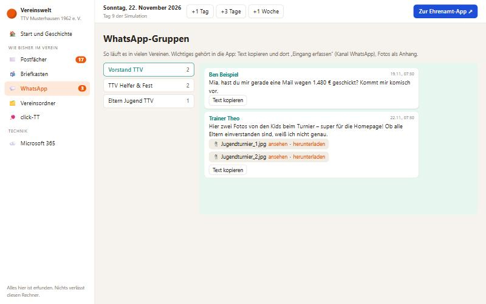
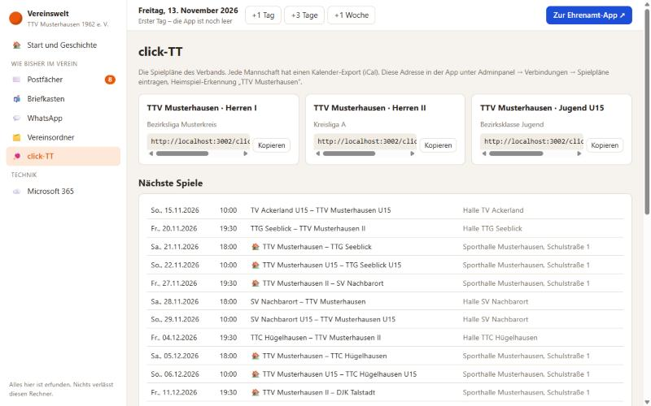
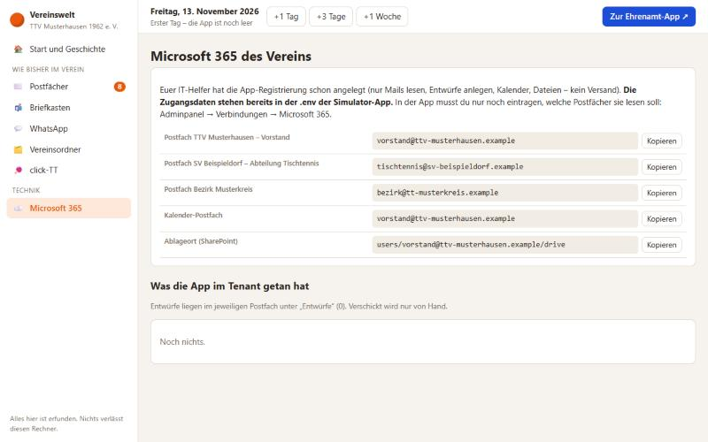
Kapitel 1: die App einrichten
16 Prüfpunkte, die sich automatisch abhaken, sobald die App den richtigen Stand hat – geprüft gegen die Unterlagen des Vereins. Ein Stolperstein ist eingebaut: Die Beiträge (48 €/96 €) weichen von der Voreinstellung der App ab.
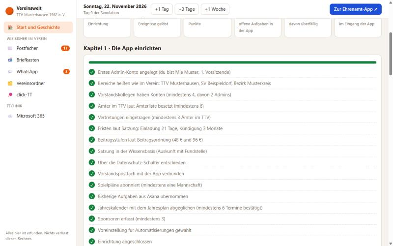
Beispiel: der Mitgliedsantrag
- Tag 1 – Post im Briefkasten. Familie Lustig wirft den ausgefüllten Antrag für Lea (12) ein. Das SEPA-Mandat fehlt, das Foto-Häkchen ist nicht gesetzt.
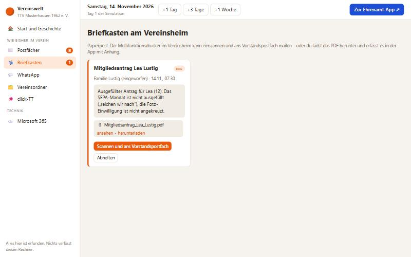
- Einscannen. „Scannen und ans Vorstandspostfach“ – der Antrag liegt als Mail mit PDF im Postfach.
- In die App holen. Eingang → „Postfächer abrufen“. (Ohne Verbindung: PDF herunterladen und „Eingang erfassen“ mit Anhang.)
- Übernehmen mit Vorgang VOR-1 „Neuaufnahme“, Amt Mitgliederverwaltung, Datenklasse gelb.
- Bearbeiten. Antrag prüfen, Status „Wartet“ – auf Familie Lustig: SEPA-Mandat. Kommentar zur fehlenden Foto-Einwilligung. Die Willkommensmail liegt per Regel als Entwurf bereit.
- Drei Tage später mailt die Familie das Mandat mit der Vorgangsnummer im Betreff – die App ordnet es zu und beendet „Wartet“.
- Abschließen. In der Vereinswelt sind alle Prüfpunkte grün.
Kapitel 2: Vereinsalltag
17 Ereignisse aus typischen Problemen von Sportvereinen. Mit „Saisonverlauf“ treten sie an ihrem Tag von selbst ein; jedes lässt sich auch sofort auslösen. Bei jedem laufenden Ereignis stehen Tipps.
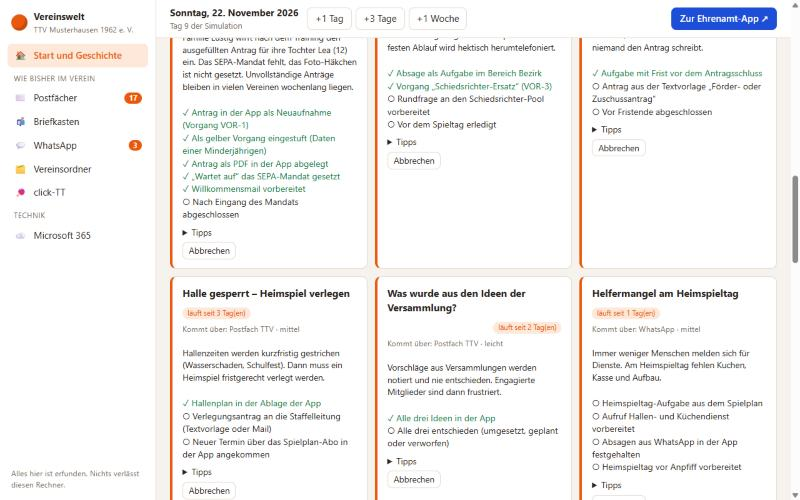
| Tag | Ereignis | Kommt über |
|---|---|---|
| 1 | Mitgliedsantrag ohne SEPA-Mandat | Briefkasten |
| 3 | Schiedsrichter sagt kurzfristig ab | Postfach Bezirk |
| 4 | Fördermittel: Antragsfrist | Postfach |
| 5 | Neue Bankverbindung per Mail (Betrugsversuch) | Postfach, WhatsApp |
| 6 | Halle gesperrt – Heimspiel verlegen | Postfach, click-TT |
| 7 | Ideen aus der Versammlung entscheiden | Postfach |
| 8 | Helfermangel am Heimspieltag | |
| 9 | Fotos vom Jugendturnier ohne Einwilligung | |
| 10 | Mitgliederversammlung fristgerecht einladen | Postfach |
| 11 | Fahrdienst zum Ranglistenturnier | Postfach, WhatsApp |
| 12 | Sponsorvertrag läuft aus | Postfach |
| 13 | Auskunft nach Art. 15 DSGVO | Postfach |
| 14 | Kündigung kurz vor Jahresende | Postfach |
| 15 | Kassenprüfung: Belege zusammensuchen | Postfach |
| 16 | Alles hängt an der Vorsitzenden | Postfach, WhatsApp |
| 18 | Beitragsstufen zum Jahreswechsel prüfen | Postfach, Vereinsordner |
| 20 | Kassenwart hört auf | Postfach |
Zeitraffer: „+1 Tag“, „+3 Tage“, „+1 Woche“. Je Tag läuft der normale Tageslauf der App (Erinnerungen, Jahreskalender, Regeln, Postfach- und Spielplan-Abruf), dann reagiert die Welt – z. B. genehmigt die Staffelleitung eine Verlegung, und der neue Termin kommt am Folgetag über das Spielplan-Abo. Zurückspulen gibt es nicht; dafür --neu.
7Tipps und Hilfe
⌨️ Tastenkürzel
N neue Aufgabe · / Suche
💾 Sicherung
npm run backup legt Datenbank und Ablage nach backups/.
🔑 Passwort vergessen
Ein anderer Admin vergibt ein neues. Notfall: npm run passwort-zuruecksetzen -- <anmeldename>
🌙 Hell/Dunkel
Symbol unten links neben dem eigenen Namen.
❓ Hilfe in der App
„Hilfe und FAQ“ mit Grundsätzen, Tastenkürzeln und Änderungsverlauf.
📄 Weitere Dokumente
docs/: BEDIENUNG, EINRICHTUNG, SIMULATOR, MICROSOFT-365, KI, BETRIEB, ARCHITEKTUR.
Häufige Fragen
Schickt die App Mails ab? Nein. Sie legt höchstens nach Freigabe einen Entwurf ins Postfach; verschickt wird in Outlook von einem Menschen.
Was sieht eine Zuarbeit-Person? Nur die Bereiche, die ihr zugeordnet sind. Entzug wirkt sofort.
Kann ich Asana weiterbenutzen? Für den Umstieg einmal importieren (Adminpanel → Asana-Import); erledigte Aufgaben dienen als Vergleich in den Kennzahlen.
Wo sind meine Daten? In data/ auf eurem Server. Simulator, Demo und leere App haben eigene Ordner und berühren data/ nicht.